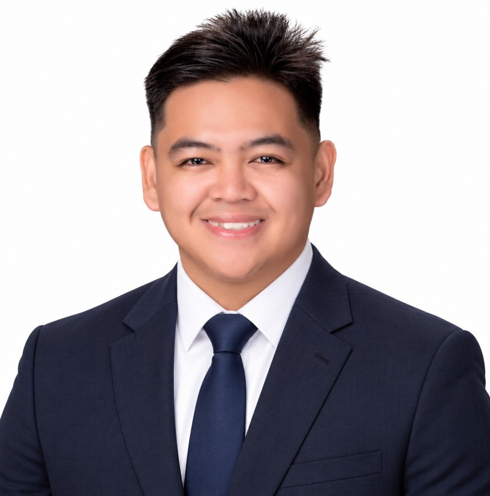

Keep people productive.
- PC maintenance & system diagnostics
- Hardware assembly & disassembly
- Printer & peripheral troubleshooting
- Software installation & driver support
IT Support / Network Support
Practical support. Reliable connections.
I help people get back to work by troubleshooting devices, restoring connectivity, and keeping technology organized.
Based in Pitogo, Quezon, Philippines

01 / About me
I'm an Information Systems graduate from Lyceum de San Pablo with practical experience supporting computers, peripherals, and network infrastructure at Quezon 1 Electric Cooperative, Inc.
My work has included resolving printer and connectivity issues, setting up desktop units, replacing network cables, and maintaining technology inventory records. In my current role with LGU Pitogo's MSWDO, I bring that same attention to detail to GAD planning, documentation, and project coordination.
I'm pursuing opportunities in IT Support and Network Support, where clear communication and methodical troubleshooting make a difference every day.
02 / Technical capabilities
Practical experience across end-user support, network infrastructure, and everyday workplace tools.
Additional tools & foundations: Power Automate · Power BI · Power Apps · Microsoft Copilot · Visual Studio Code · Python (AI & machine learning basics) · WordPress (basics)
03 / Featured project
A team capstone that brings gym operations together in one management system.
Gym Management System with Integrated POS and Inventory.
Developed as a group capstone at Lyceum de San Pablo, FitFlow brings gym management, point-of-sale, and inventory functions into a shared system.
Project context: I was part of the capstone team. System development and the linked video demonstration were completed by a fellow team member.
04 / Work experience
05 / Education & recognition
Magna Cum Laude · GWA 1.33
Consistent President's Lister
BSIS Paragon Class Representative, 3rd Year (2023–2024)
Academic Achiever
06 / Let's connect
For IT Support and Network Support opportunities,
reach out by email or connect with me on LinkedIn.